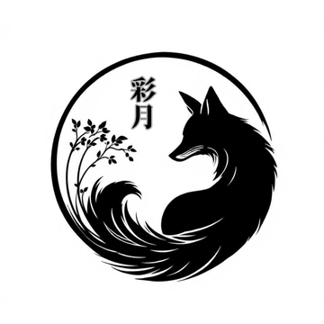

著者紹介

略歴＆実績ハイライト
- 平安の世界で、みんなと紡ぐ物語体験
- 「楽しくて一瞬で時間が過ぎたよ！」プレイヤーさんからいただいたこの言葉が、私の宝物です
- はじめまして、彩月です。マーダーミステリー歴3年、PL300卓以上、GM150卓回以上の経験を活かして、平安時代を舞台にした協力型シナリオを創作しています。
- 他にも、オンラインセッションや雑談で雰囲気を尊重しつつ思考を邪魔しないBGMを作ったり、HPを作ったり、キャラアプリやゲームアプリ制作など幅広く手掛け中。
なぜ平安時代？
現代では味わえない「陰陽師」「歌合」「妖怪」が当たり前に存在する世界。文字一つ一つに想いを込める雅な文化。今は使わなかったり、廃れているものもある。けど、確かに私たちの中に根付いている世界。 この非日常の世界観が、プレイヤーを別世界へと誘います。実際、「平安時代の世界観がしっかりしてるから、楽しかった！」という声をたくさんいただいています。
協力型で生まれる楽しさ
みんなが仲間だから、推理に集中できる。誰かがミスしても、全員でカバーし合える。 軽口を叩き合いながら、一緒に真相へ向かう道のりそのものが楽しい。 「みんなで難しい謎を解いた！」という達成感を、全員で分かち合える瞬間が最高です。
作品への想い
シナリオを書く時、一番大切にしているのは「キャラクターが生きているか」ということ。
私は執筆中、キャラクター一人ひとりの目線に立って、その感情や動きを丁寧に描きます。キャラクターが自然に「降りてくる」まで待ち、無理に書かない。私の考えや都合を押し付けない。だからこそ、プレイヤーさんが自然にキャラクターに入り込めるシナリオが生まれる。
協力型の醍醐味は、3人が同じゴールに向かって進むこと。育った環境も、見ている世界も違う3人だからこそ生まれる視点の違いや、手を取り合う瞬間がいとおしくなるのではないかと考えています。目標設定も個人の想いを大切にしながら、決して仲間を裏切らない構造にこだわっています。
平安時代設定は、歴史を徹底的に調べた上で、あえてフィクションとしての要素を入れています。陰陽師、身分制度、当時の地形……魅力的な要素だけを抽出して、現代人が楽しめる物語に整形。シナリオ終了後の感想戦で、「このシナリオで歴史の勉強はしないでくださいね（笑）」とお伝えしていることもあるくらいです。
特にうまくできたなと誇りに思うのは、第一夜で各キャラクターの見せ場と役割を確立できたこと。全員が主人公として輝ける瞬間を作れました。
この世界へのこだわりとして、シナリオだけでなく、BGMやキャラクターアプリも自作しています。物語が終わってもキャラクターたちが「生きている」と感じてもらいたいから。
制作中、新しいアイデアが次々湧いてきて「また広げすぎかな？」と思いつつも、プレイヤーさんの笑顔を想像すると止まりません。
いま、進んでいること
「続きも楽しみ」「観戦もしてみたい」――そんな声に背中を押されながら、今だ第二夜を執筆中です。同時に、キャラクターや世界観をもっと楽しめるゲームや音楽コンテンツも増やしています。応援よろしくお願いします！
一緒に平安の世界で、忘れられない物語体験をしませんか？
制作の様子はX（@aduki_yougetu）で発信。フォローや応援大歓迎。
このサイトの平安おみくじアプリで、今日の運勢も占えます！ぜひ引いてみてね。
和風ブロックくずしも楽しんでいってね。